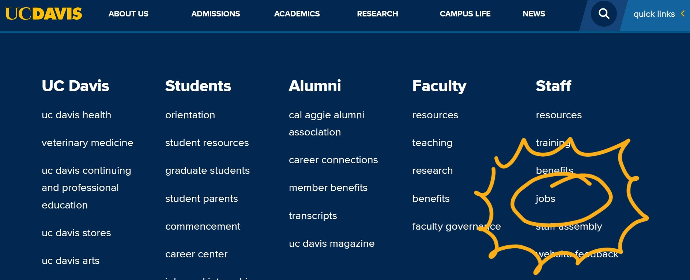
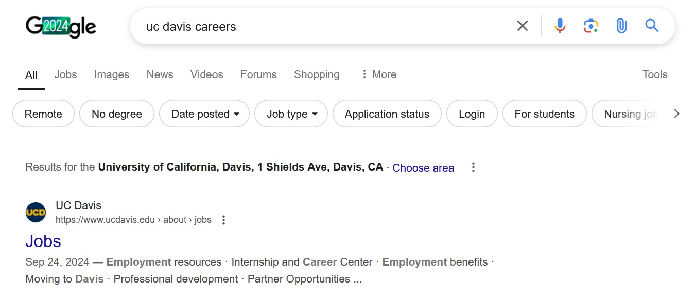

Chapter 1: Where to Search?
Identifying relevant places for jobs
1 Chapter Overview
For this workshop, we will be going over how to navigate the (mostly virtual) landscape as a job seeker. Below are categories for how someone may come across a job opportunity:
- Job boards/banks: These can either be an open online community where hiring managers and companies post job ads, closed community spaces with job postings, or job ad aggregation sites which scrape the internet for posted job ads on other sites. An example of an aggregation site is the ‘Jobs’ tab on Google search results pages. Sometimes these aggregation sites highlight jobs that are no longer available, so be mindful when using these.
- Organizations’ career pages: Depending on the size and technical scope of a company/organization, their website may have a ‘Careers Page’ or ‘Job Portal’. Through these, you can sometimes sign-up to be notified when a new position is posted.
- Events: In-person or virtual events where you can talk one-on-one with an organization
- Networking and informal announcements: Receiving or being referred to positions via social connections or being a member of a community
- Cold outreach: Directly reaching out to an organization or recruiter and asking for positions. A ‘recruiter’ is someone whose job is to find job candidates for a company. We will not be going over this in the reader.
There is going to be a lot of information listed in this workshop reader! We will be focusing on select sections for the live discussion, but feel free to peruse the other sections at a later date. If you get overwhelmed or unsure about how to handle all of this information, you can reach out to me (msouthwick@ucdavis.edu), an undergraduate advisor, or even an advisor at the Career Center!
2 Common Job Boards
There are three dominant online job platforms where hiring teams looking for entry-level workers (sometimes referred to as talent) will post job ads.
2.1 LinkedIn
Originally a professional networking site, LinkedIn has expanded to cover multiple functionalities. This includes hosting job ads, learning courses (formely Lynda.com), running news articles and more (including puzzles).
There are over 230 million users in the US alone (LinkedIn, 2024). It is a highly used site by companies and individual workers alike. If you do not already have an account, you will need one in order to browse and apply to roles posted on LinkedIn.
2.1.1 Signing Up
For this workshop, we will be exploring LinkedIn Jobs. You will need to set-up an account.
If you haven’t set-up one already, you can do it now:
- Go to linkedin.com.
- Click “Join now” under the three sign-in options.
- Continue to fill out the information requested. You will likely use this account after you complete your undergraduate degree, and so signing up with a personal email is suggested. You can add your university email as a secondary email under Settings >> Sign in & security >> Email addresses.
With your student email, you can sign up for courses on LinkedIn Learning for free (mostly). If you’re want to upskill in a specific area, you can check out this courses and add completion of them to your LinkedIn profile. However, be mindful of services that request payment, whether it’s on LinkedIn or elsewhere.
2.1.2 Creating a Profile
You can connect with classmates, coworkers, and friends. There’s nothing incredibly special about having a large number of connections, especially when it comes to securing a job. The main benefit of having more connections is catching when someone re-posts or posts a job ad. This could be relevant when you’re looking at organizations you may want to work at, but they do not have any current openings.
Learn some best practices for building out your LinkedIn profile! The UCD Career Center has a great page for this.
2.2 Handshake
Handshake has a strong connection with the higher education space. This is a job platform geared towards university students and recent graduates.
There’s plenty of information on Handshake via the UC Davis Career Center. Instead of going over it in this workshop, we will refer you to the UC their page on setting up a Handshake account and navigating Handshake: Click here.
2.3 Indeed
Indeed is another major job board site minus the social networking. You can set-up an account similarly to how you set up the LinkedIn account.
2.3.1 Signing Up
- On Indeed, click on ‘Get Started’ or ‘Sign In’ go through the steps.
- Make sure you keep track of which emails you are using to sign-up for these accounts. We will talk about how to manage the number of emails you may receive from these sites in Chapter 3.
2.3.2 Creating a Profile
You can upload as much or as little information to your profile as you feel comfortable with. You can mainly use Indeed to identify jobs. All the other data you provide to Indeed will help ‘customize’ your search, but that may broaden or narrow your search in ways you don’t know.
2.4 Other Job Boards
Since this is workshop tailored towards students pursuing psychology and psychology-related majors, we will list some relevant job boards below. This list is not comprehensive.
- EdJoin: One of the main job sites for education-related roles (e.g., instructional aides, paraeducator roles, teaching).
- American Psychological Association (APA): Job postings are available, but they are often tailored towards experienced roles. However, more information on navigating the job search from APA can be found here and may be more useful to undergraduates.
- Association for Psychological Science: Job postings are available, but they are often tailored towards experienced roles.
- Cognitive Development Society: A range of roles are posted, from research assistants to directors and professorships.
- Society for Research on Child Development:
- UCD Career Center’s page on finding government/public center jobs and international jobs.
- PsychologyJobs.com
Ask instructors or teaching assistants if they know of any professional psychological organizations. These could be additional avenues for networking and finding opportunities.
- If an organization requires you to pay to use their job board or to sign on for a paid membership, proceed with caution.
- Outside of LinkedIn/Handshake/Indeed or other major job boards, try to apply to a position through the organization’s actual website. Niche sites or sites that web scrape for postings may accept applications, but you may not know how often a hiring manager checks out submitted applications on third-party sites.
3 Organizations’ Career Pages
If you know there’s a place you are interested in working at, you can try to search for available jobs on their website. Major organizations may have a career portal or page built into their own website. You can usually find these career pages at either the top and/or bottom of the homepage. The career page may be labeled as either ‘Jobs’, ‘Careers’, ‘Working at _____’, or something similar. See image below for an example of a ‘Jobs’ link found at the very bottom of the UC Davis home page.

If you are not sure whether the organization has a career page, you can also Google search the organization’s name plus the keyword ‘Careers’ or ‘Jobs’. See the example below.

Sometimes through a company’s career portal, you can sign on to be a part of a ‘talent community’, where you can be directly notified if a relevant job is posted. These ‘talent communities’ are usually only supported by major organizations (think big Finance like Goldman Sachs), so this tip is less relevant to more psych-related roles.
But, even smaller organizations or businesses may have an email listed for job availability inquiries.
4 Events
Events that connect potential job candidates (e.g., undergraduate students) to employers are called, “career fairs”. One of the benefits of being in higher education is access to these career fairs.
The Career Center runs career fairs throughout the year click here for more. Steps for preparing for these fairs are listed at the bottom of the page. - Winter Career Fair: Wednesday, Feb. 5, 2025 from 11-3p.m. - Spring Career Fair: Wednesday, Apr. 16, 2025 from 11-3.pm. - Both are at the University Credit Union Center
5 Networking & Informal Channels
5.1 Community Spaces & Societies
While not all of them will lead or disseminate job opportunities, there are so many more student organizations on campus! Click here for more, or here for UCD Psych-related clubs. Some of these UCD Psych-related clubs include:
- Undergraduate Psychology Association (UPA)[P
- Psi Chi
- Cognitive Science Student Association (CSSA)
- Neurotech@Davis
There are also other organizations which support students nationwide. A couple are listed below, but you may find local chapters on the UCD student org list linked earlier.
- Black in Neuro
- Society for Advancement of Chicanos/Hispanics & Native Americans in Science (SACNAS): UCD Chapter & National Website. At the national-level, a major annual conference is held every year where attendees attend programming such as a career expo.
5.2 Listservs
Another way that you can find opportunities beginning with professional organizations is by joining their ‘listservs’.
Listservs automatically distribute emails to multiple recipients. You can subscribe to a listserv by either emailing the administrator or following subscription instructors.
Listservs are often free to join, but they may require some level of organizational affiliation. For example, UC Davis has a major listserv platform where you can subscribe to varied mailing lists.
Outside of the UC Davis system, psychological professional organizations often have listservs themselves. A few are listed below, linked out to their joining instruction pages.
- Cognitive Development Society
- Psychonomic Society
- Society for Affective Science
- Society for Judgment & Decision Making
To manage the number of emails you receive from a listserv, you can usually request to only receive a daily summary of the messages sent to the listserv. We will also discuss creating a filter in your email inbox in a later section.
Again, ask instructors or teaching assistants if they know of any professional psychological organizations that are relevant to your interests. You can then explore where these organizations house listservs.